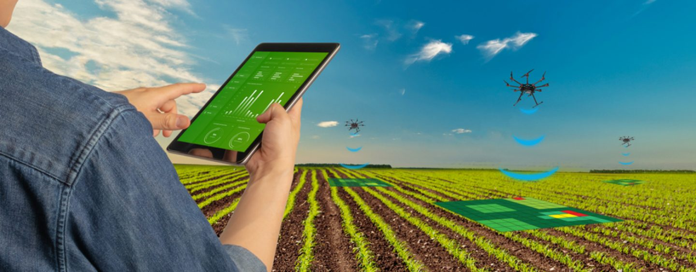

O que são Inteligências Artificiais Generativas?
As Inteligências Artificiais Generativas (IAGs) são sistemas de inteligência artificial projetados para gerar dados, conteúdos ou até mesmo soluções criativas de forma autônoma. Essas IA possuem a capacidade de aprender a partir de conjuntos de dados existentes e criar novos dados ou conteúdos com base nesse aprendizado.
Como funcionam as Inteligências Artificiais Generativas?
As IAGs são geralmente alimentadas com algoritmos de aprendizado de máquina, como redes neurais artificiais. Elas são treinadas com grandes volumes de dados, permitindo que elas capturem padrões e características essenciais. Com base nesse conhecimento, as IAGs podem gerar dados ou conteúdos inéditos por meio de técnicas como redes neurais generativas adversariais (GANs) ou modelos de linguagem, como o GPT-3.
Utilização de Inteligências Artificiais Generativas na Agricultura
A agricultura é um setor que se beneficia enormemente das Inteligências Artificiais Generativas. Aqui estão alguns exemplos de como elas podem ser aplicadas:

1. Otimização de colheitas
IAGs podem ser treinadas com dados sobre safras anteriores, condições climáticas, práticas agrícolas e outros fatores relevantes. Com base nesse conhecimento, elas podem prever a melhor época para o plantio, otimizar o uso de fertilizantes e pesticidas, bem como ajudar na prevenção de doenças e pragas.
2. Melhoria de seleção genética
Através da análise de grandes conjuntos de dados genéticos, as IAGs podem identificar padrões e características desejáveis em plantas e animais. Com isso, os agricultores podem selecionar de forma mais precisa e eficiente os melhores cruzamentos genéticos para melhorar a produtividade, resistência a doenças e outras características desejáveis.
3. Monitoramento de culturas
IAGs podem ser usadas para analisar imagens de satélite, drones ou sensores instalados nas propriedades agrícolas. Com base nessas informações visuais, elas podem identificar áreas com problemas de irrigação, identificar doenças ou deficiências nutricionais nas plantas e fornecer orientações precisas para os agricultores sobre como melhorar o cultivo.
4. Personalização da alimentação de animais
IAGs podem ser aplicadas para criar dietas personalizadas para animais, considerando fatores como idade, peso, saúde e níveis de atividade. Com base nessas informações, elas podem gerar receitas balanceadas e otimizadas para garantir a saúde e o bem-estar dos animais, além de melhorar a eficiência alimentar.
Conclusão
As Inteligências Artificiais Generativas têm um enorme potencial para revolucionar a agricultura. Com sua capacidade de gerar dados, conteúdos e soluções criativas, elas podem impulsionar a eficiência, produtividade e sustentabilidade no setor agrícola, permitindo aos agricultores tomar decisões mais informadas e obter melhores resultados.
